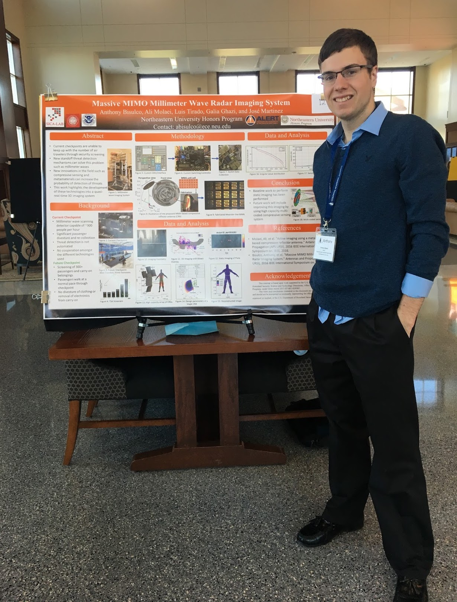

Hi, my name is Anthony Bisulco and I am a graduate student in Electrical and Computer Engineer at Cornell Tech(NYC). This website is devoted to my various personal projects and blog. My areas of interest are in signal processing specifically compressive sensing(CS), machine learning, biomedical imaging, optimization methods, parallel programming and radar systems. I actively worked in these areas while working at MIT Lincoln Laboratory, CERN, Google, the SICA Laboratory and the Singh Robotics Laboratory. If you have any feedback on the work in this portfolio, please feel free to contact me at arb426@cornell.edu
Social Accounts